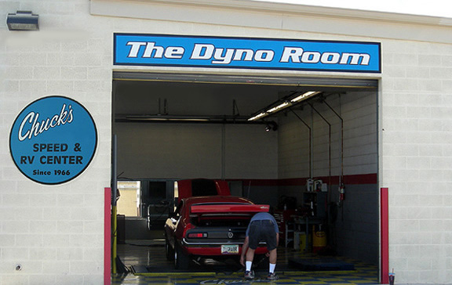
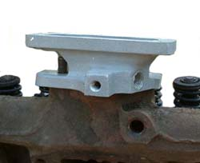
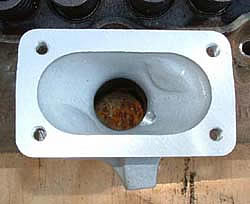
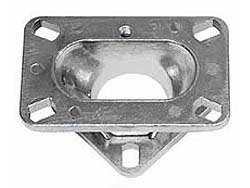
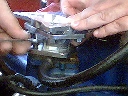
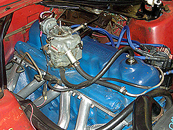
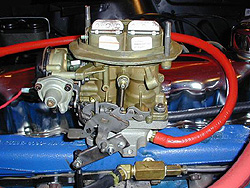
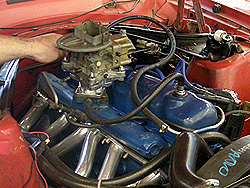
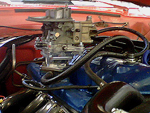
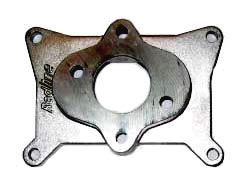

Upgrading to a 2V carb has become very popular among enthusiast looking for an increase performance. While our tech article "Upgrading to a 2V Carburetor", covers the various carb adaptors and how to modify a log manifold, several questions remain un-answered. Which carb offers the most performance and/or power gains? Which offers the best mileage and/or driveability? Will an adaptor give the results desired, or result in flat spots and hesitation? Or is it better to modify the intake and mount the carb directly to the log?
In an effort to answer these questions, Classic Inlines decided to test a few of the more popular carburetors, as well as the various mounting methods. For the first part of our testing, we went to Chucks Speed and RV Center, in Phoenix, AZ. Not only is the Dyno Room clean and roomy, its equipped with steel work benches and up to date, state of the art equipment. They also offer a complete machine shop and a fully stocked speed shop, and have several qualified mechanics on staff who are eager to assist in anyway they can.

DYNO TEST
Part One of our testing was to test the stock YF carb verse a progressive Weber DGV 32/36, a Holley 350cfm, and an Autolite 240cfm. All three carbs were mounted to the log using a 2V-1V adaptor purchased from Langdon's. The testing was done using Gene's Maverick, which has a stock 250ci with dual out headers and a DUI ignition system. The compression ratio was probably down a bit, compared to a fresh motor with low mileage, as the rings were definitely showing signs of wear. During the first few runs we had quite a bit of smoke coming out of the pipes, but after the fourth run it seem to settle down, as the smoke all but disappeared.
Even though the motor wasn't ideally suited for testing, the results should be adequate for making a comparison between the different carbs, using a 2 into 1 adaptor.
 |
|
 |
Clifford adaptor (above) Langdon adaptor (see below) |
While we don't get along with Clifford's
(we've heard from several of our customers that they trash talk Classic Inlines constantly), we're more concern that our customers get the right products for the job at hand. Therefore we recommend Clifford's 2V adaptor over the one Langdon sells, as it's better suited to the task. First it can be mounted directly to the log intake, which eliminates the original spacer and allows for more hood clearance. And because it has provisions for the PCV fitting and linkage. However Langdon's is the best place to purchase a Weber carb as they have better pricing, and outstanding customer service. If your looking for a Holley carb, you can find them at numerous shops online, including Summit and Jegs. For Autolite carbs, we sell them, as well as the various adaptors needed to install Holley and Autolite carburetors.
In the pictures below you can see which adaptors were used, and how they stacked up. In reality, if we were going to mount an Autolite or Holley 2V carb permanently, we would use an adaptor that was designed specifically for these carbs in order to keep hood clearances in check. However for our purposes, this wasn't a concern, plus we wanted to keep things as equal as possible for our comparisons. For more information on carb adaptors, click here.
 |
 |
Langdon's 2 to 1 Carb Adaptor |
Mounting the adaptors |
| |
|
 |

|
Stock YF carb |
Progressive Weber DGV |
| |
|
 |
 |
Holley 350 |
How it all stacks up |
To establish our baseline, we tested the stock YF-1V carb first. Gene has been using this carb for the past few years and has tuned and jetted it for the best performance possible, so no adjustments or changes in jet size were required. To make sure our baseline numbers were accurate, we did two pulls, which were nearly identical.
Once the baseline numbers were established we pulled the YF carb, installed the 2-1 adaptor. We then attempted to install the Weber carb, but the bolts that came with the carb and adaptor kit didn't fit. Rather than taking time to drill or file out the holes, we simply used smaller bolts to mount the carb. Once it was securely mounted, and checked for vacuum leaks, we proceeded to make two pulls on the dyno. Between pulls, we only needed to made minor adjustments to the idle settings, as the A/F ratio was right on.
Before testing the Holley or Autolite carbs we needed to install a second carb adaptor. This time we used an adaptor which is normally used to mount the Holley/Autolite carbs to the OZ250-2V intake manifold. As we stated earlier, neither of these adaptors would normally be used due to their stacked height, or reduced hood clearance. Instead we would use an adaptor designed to mount the carbs directly to the stock spacer, as shown below.
|
 |
Holley to OZ250-2V |
Holley to Log Manifold |
With the second adaptor and the Holley 350 installed, we make our next pull on the chassis dyno. It was immediately evident that we had a vacuum leak as the A/F ratio was extremely lean. After fixing the problem we did two more pulls, re jetting the carburetor after each run. While the Holley idled smoothly, there was a heavy flat spot during hard acceleration. This may be from a faulty accelerator pump, or inherent in the Holley carb. Unfortunately we didn't have time to dig into it, to see if we could cure the problem.
Once we were satisfied with the numbers from the Holley, we installed an old Autolite carb that was purchased at a swap meet earlier this summer. The Autolite had 1.01 venturi's, which made it a We had no idea if it would run, but thought we might as well give it a shot since we had it. To our surprise it ran quite well and had the same qualities as the Weber carb. Smooth idle, good throttle response, and no flat spot during acceleration.
RESULTS
The table below shows the maximum HP and Torque, and the RPM where the peaks occur. The dyno graphs are posted at the bottom of this page. Click on the graph for a full size image. Remember to used the Back button to return to this page.
Carburetor |
C/O |
HP |
@ RPM |
% Gain |
Torque |
@ RPM |
% Gain |
Stock YF |
7.5% |
75/62 |
3950 |
Base |
110/100 |
2500 |
Base |
Weber |
6.0% |
80/65 |
4100 |
6/5 |
116/105 |
2650 |
5/5 |
Autolite |
6.5% |
79/67 |
3750 |
5/8 |
118/107 |
2550 |
7/7 |
Holley |
6.5% |
80/68 |
3950 |
6/9 |
120/109 |
2600 |
9/9 |
NOTE: the peak numbers are posted first, followed by the average (example 75/62).
|
|
SUMMARY
To our surprise, all three carbs made approximately the same horsepower and torque, however the gains were less than we expected. The only thing that changed was the rpm where the peaks occurred. The Weber carb made the least amount of power and torque, at the highest peaks. The Holley made the most HP and TQ, but the peaks were slightly lower. The Autolite made slightly less power and torque, however it peaked much sooner than the other two. Both the Weber and Autolite carbs accelerated smoothly, while the Holley had a definite stumble around 2100 rpm. The Holley 350cfm may be just a tad bit to big for a stock 250ci, while the Autolite 240cfm was probably a little small. I'm not sure what the cfm rating is for the Weber, as I've seen them rated at 300cfm and 325cfm. Either way, the cfm seems to be pretty close for a daily driver.
MORE TESTNG
For Part 2, we'll test the same 250ci, only next time it will have a modified log head, what we commonly call a "2V Conversion", which is set up to accept the 2V carb without using a 2-1 adaptor. It will be interesting to see the results we get. To see the results form Part II, click the link at the bottom of this page.
DYNO GRAPHS
Left click to view a full size image. Remember to use the back button to return to this page.
|
| |
|
|
YF vs Progressive Weber |
YF vs Holley 350 |
| |
|
|
|
YF vs Autolite 220 |
Weber vs Holley vs Autolite |
|


{kind=link}
{kind=link}
{kind=link}
{kind=link}